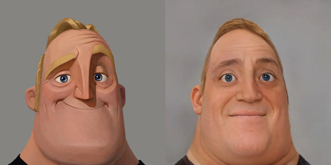
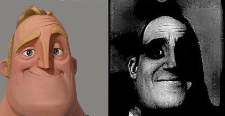

Video-based Memes
Introduction
Now, what is an "video-based meme"? It's basically a meme in video format, usually used with music and when you don't like too much panels.
You didn't have to cut me off
Also known as the "big brain meme", this meme is usually found in YouTube shorts. This meme uses a "big brain meme template" while having a sped-up version of Gotye's "Somebody That I Used To Know" in the background. This meme is usually used when someone says 2 things contradicting each other, or when someone acts stupid.
An example of it being used when two thing contradict each other would be this:
This is a short clip from a Nas Daily YouTube short titled How This Woman Fixed Plastic.
TIP
If you don't get the meme, that's perfectly normal, since some people also don't get it too.
Here's a little explanation:
Since the narrator says that "...when you put her plastic in water, it dissolves within minutes, and the water can still be drinkable." and then says "...she can make plastic for packaging, food covering, bottles...", which contradicts "when you put her plastic in water, it dissolves within minutes" since adding water to the plastic makes it dissolve, making it unfit for bottles, and is why the video cut there, with the "big brain meme" at the end.
Mr. Incredible becomes (un)canny
Usually found on YouTube shorts and TikTok, the Mr. Incredible Becoming (un)canny meme is actually divided into two portions: uncanny, and canny, which is why you see it as (un)canny.
Mr. Incredible becomes uncanny
This portion is a series of memes based on edited images of character Mr. Incredible in which he appears increasingly traumatized (Mr. Incredible Becoming Uncanny, 2022)
Originally, it started out as a panel meme:

Then it was edited, into black and white, giving it a more creepy feel.:

Then it was edited again, in a video format, by YouTube user músicos Cínicos 鯉, showing photos of Mr. Incredible from the original to the creepiest version of it:
It was refined by some unknown person, then it spread out to TikTok, then it spread out to Facebook.
Mr. Incredible becomes canny
This portion is a series of memes based on edited images of character Mr. Incredible, except this time, he appears increasingly happy.
This meme is one of the descendants of the "Mr. Incredible becomes uncanny" meme, though this particular descendant is more known than the others.
Since this meme is a descendant of the "Mr. Incredible becomes uncanny meme", that would be the origin of this meme,
Then, YouTube user MexicoEmpireFOREVER added a panel with Mr. Incredible wearing glasses, while having a rainbow-like tint in the background, as well as changing the music in the background:
After that, Redditor insaneliving_ uploaded a reversed version of the Mr. Incredible Becoming Uncanny format to r/MemeTemplatesOfficial. In the video, 10 increasingly positive versions of Mr. Incredible follow each other as the music progresses from calm to heavy metal. On the same day, TikToker @nobleretat reposted the video (Mr. Incredible Becoming Canny, 2022), which started the spread of the meme on TikTok, due to the amount of people that have seen the post. The template gained popularity in memes on Reddit, Facebook and other platforms, and in the following days, the subformat spread rapidly on YouTube, TikTok and other social media. (Mr. Incredible Becoming Canny, 2022)
Slander
A fresh meme, usually found on YouTube, and sometimes on YouTube Shorts, this is a compilation of satirical memes that "slander" the topic based on stereotypes. This style of format is usually used to make fun of things such as fandoms, countries and video games revolved around pop culture.
Although this is a funny thing, it also has it's downsides, mainly: using stereotypes. According to Google, stereotypes are: "a widely held but fixed and oversimplified image or idea of a particular type of person or thing". See, while stereotypes are a good way to generalize something quickly rather than digging, there is a high chance that a stereotype is wrong, and if you use THAT inside a slander video, it's definitely going to attract the attention of the community you slandered, which can go in two ways: them not caring, or, them giving your slander video a big dislike-to-like ratio, as well as throwing insults, depending on the weight of your stereotype. For example: a community being stereotyped as (pretend X is a bad thing) "X", while the community itself has either no people or a negligible amount of people with the X trait. Using that X trait inside your slander video will definitely aggravate the people of that community, depending if they see the video and the weight of X.
Now that were off the downsides of the slander meme, we will look at it's usage.
Usage
Here is an example of a slander video, made by YouTube user Mister Ursus Usually, slander videos will be accompanied by these songs:
Citations
- https://knowyourmeme.com/memes/mr-incredible-becoming-uncanny
- https://knowyourmeme.com/memes/mr-incredible-becoming-ascended-canny
- https://knowyourmeme.com/memes/fans-explaining-montages-x-slander
- https://www.youtube.com/watch?v=PLMIl-7e27k
- https://www.youtube.com/watch?v=-t8xoidDvaA
- https://www.youtube.com/watch?v=tPYAiGRPk6w
- https://youtube.com/shorts/l0W3FLo9MZ4